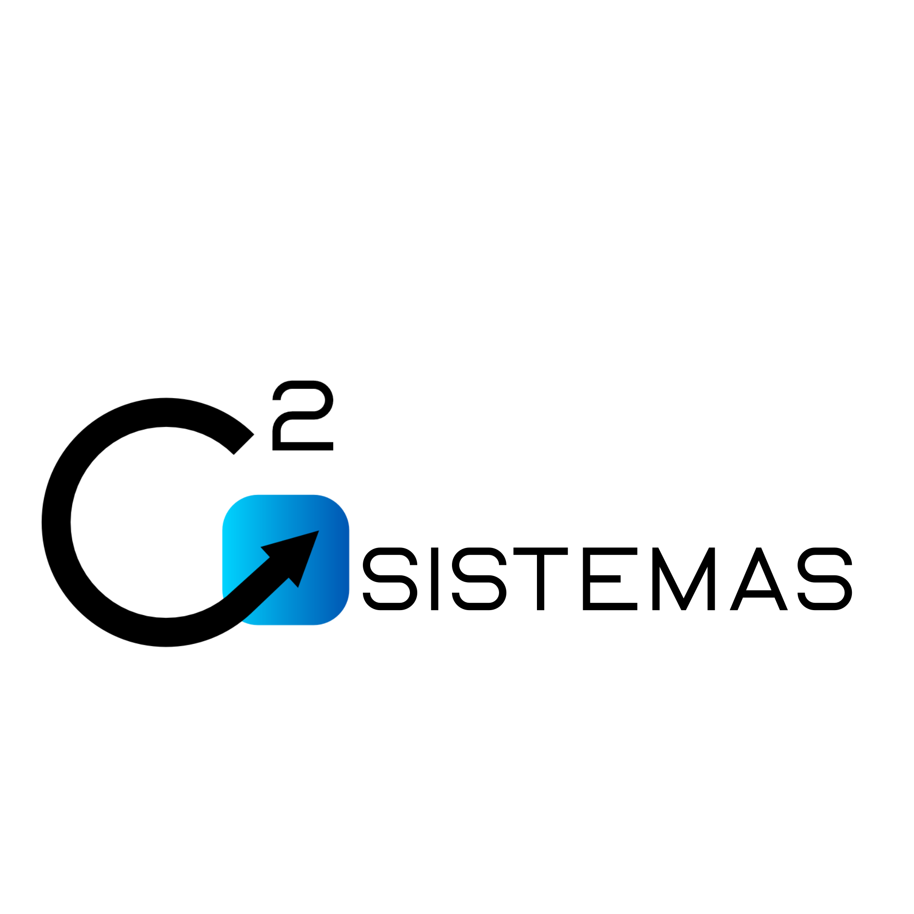

Visualizador de Sistemas
Selecione um sistema para visualizar no painel principal.
Sistemas disponiveis
Atalhos: teclas 1, 2 e 3
Sistema selecionado
-
Dica: se algum sistema bloquear a exibicao interna, use "Abrir em nova aba".

Selecione um sistema para visualizar no painel principal.
Sistemas disponiveis
Atalhos: teclas 1, 2 e 3
Sistema selecionado
Dica: se algum sistema bloquear a exibicao interna, use "Abrir em nova aba".